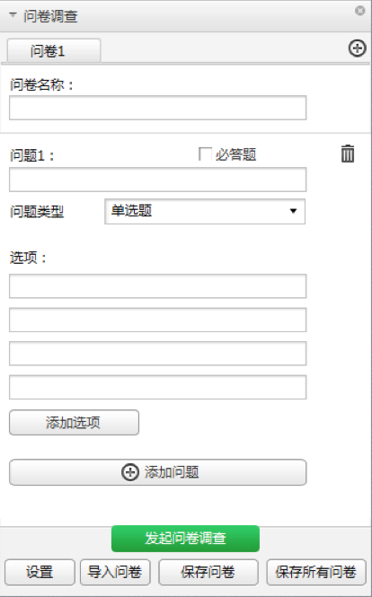

问卷调查
问卷调查可以帮助您收集与会者的反馈信息。通过问卷调查的方式，可以获得某项决议。问卷调查只能由主讲人发起。
➢ 新建问卷调查
主讲人可以根据会议讨论的内容、与会者的意见，通过问卷调查的方式得出结论。
1. 在工具栏中，单击 ，选择“问卷调查”。
，选择“问卷调查”。
2. 在如上图所示面板，新建问卷调查的内容。
− 在新建问卷调查内容时，您可以进行“问题类型”设置、“添加选项”、“添加问题”等操作。
− 在问卷调查内容新建完成后，您可以单击“保存问卷”，将当前的问卷内容保存到本地文件夹，文件格式为“*.qes”或者“*.htm”。后续可以通过“导入问卷”的方式继续使用。
问卷调查

说明：
- 编辑问卷内容时，输入框中不能超过256个字符。
- 在保存问卷时，如果您没有选择保存路径，则系统将问卷保存在默认的路径下。
- 在问卷调查面板，您可以单击，新增问卷，且最多支持新增25个问卷。单击，删除问卷问题。
➢ 设置问卷调查
在问卷调查开始前，您可以设置问卷调查时间、问卷形式和问卷结果的共享权限。
- 在如上图所示面板，单击“设置”。
系统显示“问卷设置”界面。
3. 在如上图所示面板，单击“设置”。系统显示“问卷设置”界面。
4. 根据实际需要设置如下内容：
− 问卷时间：完成问卷调查的时间。系统默认为5分钟。
− 问卷形式：设置匿名或记名问卷调查。系统默认为匿名问卷调查。
− 结果共享：设置投票结果的共享权限。系统默认为不共享。
➢ 开始问卷调查
在问卷调查面板，单击“发起问卷调查”，开始问卷调查。
说明：
主讲人也可以单击“导入问卷”，从本地文件夹中选择问卷发起问卷调查。只有在客户端上设置的问卷才支持重新导入。
➢ 结束问卷调查
问卷调查开始后，主讲人可以单击“停止问卷调查”，结束问卷调查。
说明：
如果主讲人没有单击“停止问卷调查”，则系统会在到达设置的问卷时间时自动停止问卷调查。没有单击“提交”的与会者，认为没有参与投票。
➢ 查看问卷调查的结果
问卷结束后，主讲人可以直接查看问卷调查结果，也可以保存问卷调查结果。